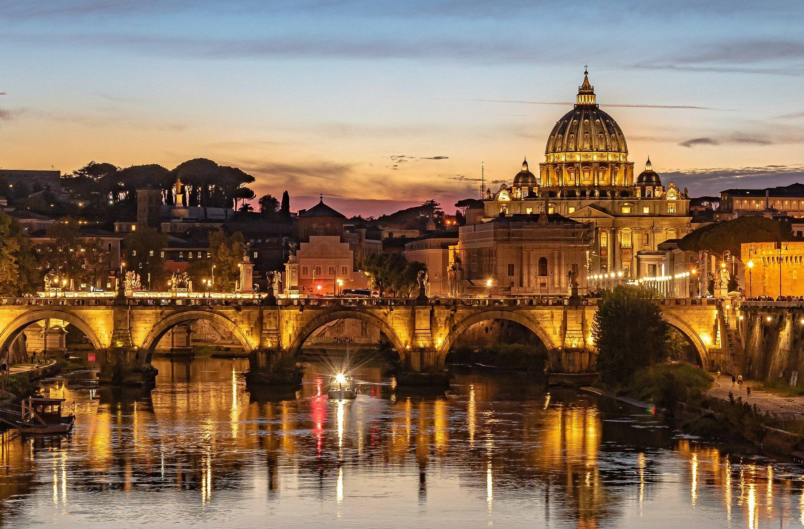

Vatican city

Vatican City (Città del Vaticano in Italian) is an independent city state located in the heart of Rome, ruled by the Pope (Bishop of Rome). It is the centre of authority over the Roman Catholic Church. The Vatican is the smallest state in Europe. It has a total area of 0,44 km² and inside its wall live approximately 1000 people. In this small state lives the Pope, in the Apostolic palace surrounded by beautiful gardens. The palace is open to the public, but visitors have to book in advance. The Vatican City was declared independent from the rest of Italy on 11 February, 1929, with the signing of the Lateran Treaty between Pope Pius XI and Mussolini.
Read more...